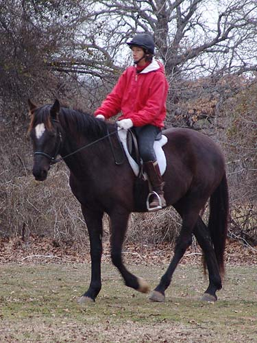

Working with Miaren Chrissie came out this time
and rode Miaren.
She had no trouble with
him, and thought
he was very nice for a youngster
coming back into work.
.
It was a bit cold and
starting to get dark, so not the best of pictures.
Chrissie hadn't ridden
him since August or so, but he didn't mind that she was up and not me.
Watching the hay truck
zoom across the pasture. He's not very spooky, but he is very curious.
She was pleased with
how well he'd bend and listen to leg.

His relaxed carriage
is pretty nice. There was even some reaching into the bridle.
A few strides of trot
for the first attempt.
Walking around the trees.
Today he was better
to the right. To the left he'd pull a bit toward the gate and his friends.
Practicing standing.
I tried one of the Ortho-flex
saddles on him today. He did well in it.
A little more trotting.
He doesn't have his balance for trotting with a rider. He was good if Chrissie
sat on him lightly. If she posted or sat heavily then he'd drop back to
a walk.